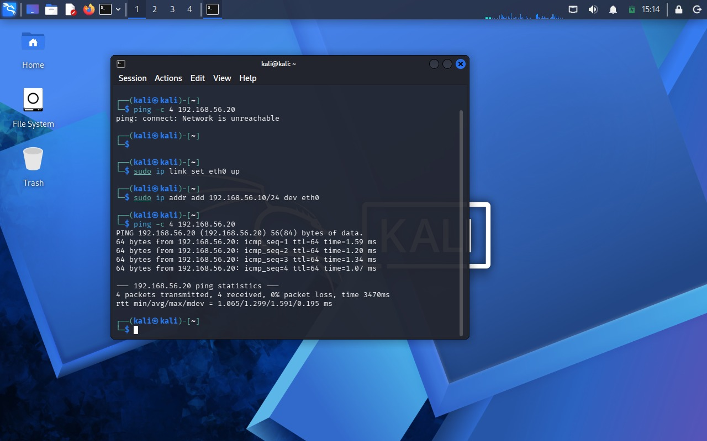

Linux reconnaissance investigation
Kali 192.168.56.10 → Metasploitable2 192.168.56.20
Capture interval: 2026-10-05T19:17:24.729288Z to 2026-10-05T19:25:10.304217Z
What the evidence establishes
Capture supports broad TCP port probing, consistent with the reported reconnaissance. Exploitation, password compromise, persistence, malware deployment and file theft are not established by the supplied evidence.
This is a generated evidence-review dashboard, not a screenshot of Autopsy or Volatility.
Capture composition
2570 total frames. SSH SYN count: 2; this is a connection-probe count, not a password-attempt count. Reset packets: {'192.168.56.20': 980, '192.168.56.10': 30}.
Review of the large-flow alert
The original grouping combines responses from 1,000 target ports to Kali port 46905: 60,000 captured frame bytes, 977 resets, 23 SYN-ACK responses and zero TCP payload bytes. This is scan-response traffic; that alert does not establish data theft.
Reported services and packet evidence
Service names/versions below are the operator’s claims. SYN-ACK indicates a responding TCP port. Excerpts come from individual packets, without TCP reassembly.
| Port | Operator reported | SYN-ACK seen | Response frame | Excerpt frame | Packet excerpt |
|---|---|---|---|---|---|
| 21 | vsftpd 2.3.4 | True | 60 | 2142 | 220 (vsFTPd 2.3.4) |
| 22 | OpenSSH 4.7p1 | True | 54 | 2124 | SSH-2.0-OpenSSH_4.7p1 Debian-8ubuntu1 |
| 23 | Linux telnetd | True | 16 | 2121 | # ' |
| 80 | Apache 2.2.8; DVWA/Mutillidae claimed | True | 53 | 2280 | HTTP/1.1 200 OK Date: Mon, 05 Oct 2026 19:22:45 GMT Server: Apache/2.2.8 (Ubuntu) DAV/2 X-Powered-By: PHP/5.2.4-2ubuntu5.10 Connection: close Content-Type: text/html <html> |
| 139 | Samba 3.X–4.X | True | 40 | 2309 | a SMBr @ @ 2 A T F `j0+ W O R K G R O U P |
| 445 | Samba 3.X–4.X | True | 72 | 2195 | a SMBr @ @ 2 A T ,s j BvW O R K G R O U P |
| 6667 | UnrealIRCd | True | 681 | 2158 | :irc.Metasploitable.LAN NOTICE AUTH :*** Looking up your hostname... :irc.Metasploitable.LAN NOTICE AUTH :*** Couldn't resolve your hostname; using your IP address instead |
Connectivity screenshot supplied by teammate
Shows initial “Network is unreachable”, interface configuration and then four successful ping replies. Its full date/time is unknown; it cannot be automatically placed inside the capture interval. ICMP frames in this capture: 0.

Next evidence needed
- Target VMDK and complete disk chain
- metasploitable_ram.elf
- Raw Nmap output with timestamps
- Host logs and acquisition records
Use Autopsy for the target disk; test Volatility Linux compatibility and exact kernel symbols for the supplied RAM format. PeStudio is not required for this Linux reconnaissance phase.
Combined timeline and evidence register · All probed ports · Service evidence CSV · Results JSON
Capture SHA-256: 6ecd14cb06b1a7038e4c9eed535d55ba6192a5097f38677859d1f6aa1755fb25